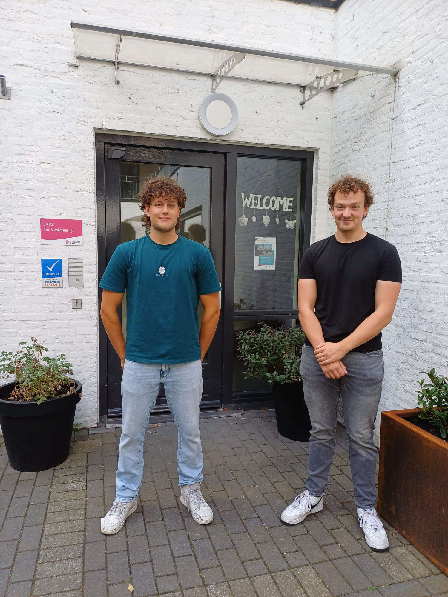

Who am I?

About me
I am a 19-year-old guy from Arnemuiden. I've always had an affinity for technology, starting with Ipads, Tablets and drones when I was about 9. Since my mom didn't want to buy Minecraft Pocket Edition for me, I had to find a different way to obtain the game. This led me down a rabbit hole of APK's, questionable websites, and a lot of viruses. I persisted, and managed to install the game for free. I definitely gave my tablet AT LEAST 2 viruses, but to younger me, that was not as important as Minecraft.
Hobbies
- Watching movies or youtube
- Scuba Diving
- Playing the electrical and classical guitar
- Producing music with FL studio
- Working out
- Kitesurfing
- Kickboxing
- Playing Minecraft or Overwatch with friends
- Building or tearing apart computers
- Drumming
- Learning and improving
- Collecting physical media (CD's, LP's, Games)